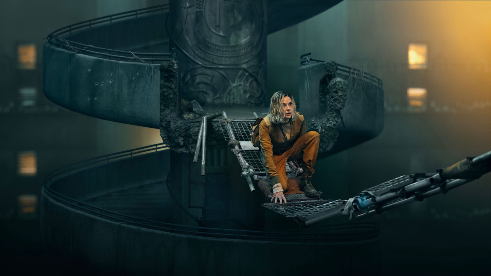

Silo – Stagione 2
Juliette fuori dal silo, la rivolta dentro: il capitolo di mezzo vince quando toglie le parole e perde quando i due fili si alternano senza rispondersi
Silo 2 vince quando lascia una sola storia sullo schermo e la fa parlare poco, e perde quando alterna i suoi due fili senza che si rispondano. È una tesi scomoda per una serie che vive di segreti sussurrati, ma basta guardare come si apre il ritorno di Juliette per capire perché. Per un'intera puntata la protagonista cammina da sola dentro un silo morto e Rebecca Ferguson, quasi senza dialoghi, regge tutto. Poi la serie si divide in due prigionie, quella di Juliette e quella della comunità rimasta sotto terra, e a ogni salto dall'una all'altra la tensione si abbassa.
Questa stagione porta la serie dal racconto chiuso della prima, un solo silo e un solo segreto, alla scoperta che i silo sono cinquanta, il punto da cui riparte la terza, già recensita da noi come Silo – Stagione 3. Il ponte regge, anche se a metà stagione si avverte che alcune puntate servono soprattutto a spostare i personaggi verso il finale. La critica americana è stata generosa: Rotten Tomatoes conta il 92% di recensioni positive su 53 e Metacritic assegna 80 su 100 sulla base di 12 critici, mentre la terza parte sale al 96%.
Di cosa parla
Chi arriva adesso deve sapere poco, perché il bello sta nello scoprire. Silo racconta una comunità sepolta in un edificio enorme, convinta che fuori l'aria sia mortale, e la prima parte ha mostrato quanto di quella convinzione fosse costruito. Dieci puntate su Apple TV, dal 15 novembre 2024 al 17 gennaio 2025, tratte dal romanzo Wool di Hugh Howey. Juliette, interpretata da Ferguson, cerca quindi risposte all'esterno e arriva in un altro silo, il 17. Nel frattempo Bernard (Tim Robbins) e Robert Sims (Common) provano a tenere insieme un potere che scricchiola, perché gli abitanti cominciano a muoversi per conto proprio. Tra le novità del cast c'è Steve Zahn, che interpreta Solo.
La scena che vale la stagione
Il primo episodio è la scelta più coraggiosa, e anche la migliore. Si apre con un flashback nel passato del silo 17. Un ragazzo, Tim, corre a portare un avviso urgente, perché tra quindici minuti i generatori finiranno sott'acqua, mentre gli insorti si battono con le guardie. Quando riescono a uscire, però, muoiono soffocati nell'aria tossica. Poi la serie torna al presente e ci lascia con Juliette, che entra nello stesso silo scavalcando i corpi di quegli abitanti, rimasti davanti all'ingresso. Dentro è buio e manca la corrente, e ogni ostacolo è fisico: il casco che si rompe, l'aria che finisce, una corda da costruire per attraversare una passerella danneggiata, l'acqua che per poco non la affoga. Intanto quasi nessuno parla, perché non c'è nessuno con cui farlo.
Il momento che resta, però, è il più piccolo. Juliette segue un tintinnio nel buio e trova soltanto una tessera appesa a un ventilatore da scrivania: una falsa pista, senza alcun mostro. Solo allora arriva la musica, e dietro una porta blindata una voce la avverte, da una feritoia, di non provare a entrare. Alice Cucchetti su FilmTV giudica quell'apertura quasi muta e nonostante questo avvincente. Ha ragione, perché la paura nasce proprio dal fatto che la serie smette di spiegare e ci lascia soli con lei.

Sott'acqua, davvero
Il silenzio torna nel settimo episodio, The Dive, e qui c'è un dettaglio che cambia il modo di guardarlo. Juliette, che non sa nuotare, deve immergersi nei piani allagati del silo 17 per far ripartire una pompa e recuperare la tuta che le serve. Quelle scene, però, le ha girate Ferguson in persona, in una vasca costruita apposta in Gran Bretagna, per circa quattro ore al giorno e con dei pesi addosso per restare sul fondo. L'attrice ha raccontato che l'erogatore le spingeva l'aria direttamente nei polmoni e che a volte le scombussolava la testa. La discesa di otto piani che vediamo sullo schermo la costruiscono le inquadrature e gli stacchi, perché la vasca era molto meno profonda. Sapendolo, quindi, la fatica sul viso di Juliette pesa di più, perché in buona parte è vera.
Il paragone che ci viene in mente è Sopravvissuto – The Martian di Ridley Scott, dove una persona sola risolve un guasto dopo l'altro in un posto che vuole ucciderla. Juliette però non ha l'ironia di Mark Watney né un diario a cui raccontarsi, e la serie fa bene a non dargliela: il suo silenzio è il modo di pensare di una meccanica, che ragiona con le mani.
La rivolta del silo 18
Con la terza puntata il racconto torna dentro il silo 18, e qui la seconda linea trova finalmente un posto preciso in cui accendersi. Nei corridoi compaiono allora le scritte «Juliette Lives». Teddy finisce in manette per averle tracciate, un gruppo guidato da Shirley assalta il presidio per liberarlo e lo scontro a colpi di molotov finisce con la morte di Cooper. La scena mette Shirley e Knox dalla stessa parte e mostra bene che cosa racconta Silo: un'idea non si ferma con un arresto, e il tentativo di farla tacere la diffonde. Il potere risponde come sa: Bernard nega di avere a che fare con le bombe incendiarie e Sims propone di sedare chi parla troppo, a cominciare da Patrick, un uomo in lutto.
Qui l'alternanza regge, e lo ammettiamo volentieri, perché le due metà parlano della stessa cosa: di quanto costi credere a ciò che è vero. Nel silo 18 chi dice la verità viene zittito. Nel 17 Juliette trova lo stufato di pollo che uno sconosciuto le ha lasciato e teme che sia avvelenato, ma lui le chiede di mangiarlo per un altro motivo: avere la prova che lei sia davvero lì.
Quell'uomo è Solo, interpretato da Zahn, e da lui Juliette apprende che i silo sono cinquanta. Federico Vascotto su Movieplayer lo avvicina al Desmond di Lost, un uomo sepolto con un segreto da custodire, e il paragone ci sembra azzeccato, perché Zahn porta nella serie un'umanità goffa e calda che prima mancava del tutto.

Dove la serie si allunga
Il difetto sta nella struttura, perché le due vicende si guardano ma non si toccano mai. Il nono capitolo lo mostra meglio di ogni altro, perché mette le due scoperte più grosse nella stessa ora. Lukas, che nel silo 18 finge di stare dalla parte di Bernard, scende nel punto più basso e trova un tunnel nascosto con una porta. Lì una voce artificiale gli dice che prima di lui ci sono arrivati soltanto in tre, mettendolo in guardia da qualcosa chiamato Safeguard. È la rivelazione più grande della stagione, eppure deve dividere l'ora con Juliette, costretta da un gruppo di ragazzi sopravvissuti a scoprire il codice di una cassaforte. Il passaggio da una scoperta all'altra smorza entrambe, perché qui le due linee non si rispondono: una apre il mistero dell'intero sistema, l'altra è un ricatto tra sopravvissuti. Vascotto nota anche che dal terzo capitolo molte puntate durano più di quanto il racconto giustifichi, e su questo siamo con lui.
Lo stesso episodio, però, salva la parte più fiacca della linea di Juliette, i giorni nel caveau con Solo e con i ragazzi, dove la serie sembrava girare a vuoto. Con l'aiuto di Eater, uno dei ragazzi, lei ricostruisce chi è davvero Solo: il figlio di Russell Conroy, chiuso là sotto da bambino con l'ordine di non aprire mai la cassaforte. Invece di usarlo, lo aiuta a fare i conti con quel trauma, e lui le consegna la tuta. La scena funziona nonostante gli stacchi perché è un'indagine piccola, fatta di indizi e di una confessione, e non ha bisogno dell'altro silo per avere peso. La regola di apertura, quindi, va precisata: lo stacco fa danni quando le due linee raccontano cose diverse, mentre quando parlano di segreti e di prigioni, come nel terzo episodio, l'alternanza diventa un'eco.
Rispetto alla prima e alla terza parte
La prima stagione ci teneva stretti tra le pareti di un solo luogo, e la scelta di portare Juliette fuori, dentro un silo vuoto e allagato, rovescia la sensazione: dalla claustrofobia al vuoto. La divisione in due non è un'invenzione della serie, perché anche la seconda metà del romanzo Wool di Howey separa Juliette, che lotta per sopravvivere nel silo 17, dalla rivolta che cresce nel 18. La differenza sta nei pesi: la serie concede a lei meno spazio e di più alla comunità rimasta sotto. Su carta il salto da un filo all'altro costa poco, perché chi legge sceglie il proprio ritmo; in televisione lo decide il montaggio, e ogni stacco interrompe un'immagine che stava crescendo. Verso la terza stagione, comunque, l'ordine è quello giusto: chi ha visto Juliette sopravvivere in un silo morto arriva pronto alla domanda che la terza mette al centro, cioè chi ha costruito tutto questo e perché.
Vale la pena vederla?
Sì, ma non a tutti allo stesso modo. Se avete amato la prima stagione troverete una Ferguson all'altezza e una rivolta che cresce con intelligenza, insieme a qualche pausa di troppo. Se invece non avete mai iniziato, partite dal principio, dato che questa parte non si capisce a metà. Chi cerca solo azione si stancherà nelle puntate centrali, mentre chi ama i misteri che si svelano piano ha qui più motivi di quanti ne perda. La serie è su Apple TV.
Silo 2 dà il meglio quando tace ed è al suo punto più debole quando salta da un silo all'altro senza che le due storie si rispondano.
Domande frequenti
Quanti episodi ha la seconda stagione di Silo?
Dieci, usciti su Apple TV dal 15 novembre 2024 al 17 gennaio 2025.
Quale libro adatta la seconda stagione di Silo?
Wool, il romanzo di Hugh Howey.
Chi interpreta Solo in Silo 2?
Steve Zahn, nel ruolo di un sopravvissuto del silo 17.
Rebecca Ferguson ha girato davvero le scene sott'acqua?
Sì: le immersioni del settimo episodio, The Dive, le ha girate lei in una vasca costruita apposta in Gran Bretagna.
Fonti consultate (12)
- Wikipedia – Silo (TV series)
- Rotten Tomatoes – Silo: Season 2
- Rotten Tomatoes – Silo: Season 3
- Movieplayer – Silo 2, la recensione (Federico Vascotto)
- FilmTV – La recensione della seconda stagione di Silo (Alice Cucchetti)
- Ready Steady Cut – Silo season 2, episode 1 recap
- Ready Steady Cut – Silo season 2, episode 3 recap
- Ready Steady Cut – Silo season 2, episode 9 recap (Jonathon Wilson)
- Winter is Coming – Rebecca Ferguson e le riprese sott'acqua di Silo (Daniel Roman, 30 dicembre 2024)
- Soap Central – Le riprese subacquee dell'episodio 7 (30 dicembre 2024)
- Soap Central – Silo 2 e il romanzo Wool (Sohini Sengupta, dicembre 2024)
- TMDB – Silo